Radio & antennas
Chirio Mini Whip - TRICKS & TIPS
Page index
December 2019
Caution with wireless chargers
Wireless chargers for recharging phones and also other electronic accessories are now widespread.
From what I could verify they are the primary enemy for HF reception, I would say they can cause interference across the entire shortwave range, and even more on medium and long waves.
How a wireless charger works: it is composed on the fixed side (transmitter) of an oscillator and a large flat coil, in the receiver we find a similar coil and the rectification circuit and DC conversion suitable for charging the lithium battery. In practice, energy is transferred at high frequency, for those doing shortwave listening, read "transmitter".
Since everything is in a plastic enclosure, all the radio frequency and related harmonics are emitted, not only towards the cell phone (primary destination) but also into the air at considerable distance (secondary destination).
Wireless Battery Charging from the information the working frequencies are highlighted which are 100-200 kHz and the powers involved 2-15W so a good longwave transmitter.
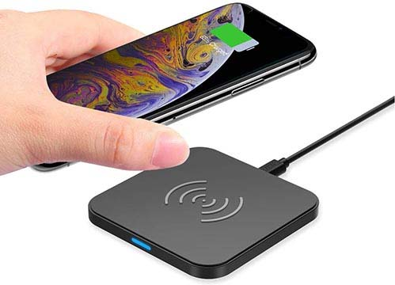
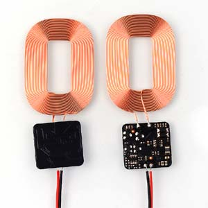
Turning on the W charger near the spectrum analyzer displays interference signals throughout the spectrum
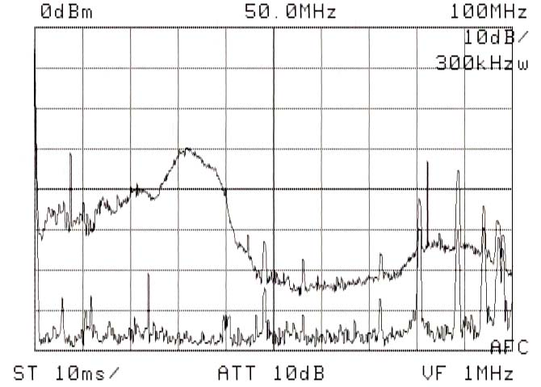
Up to 40 MHz very strong signals due to the charger operating at idle, i.e. without the phone placed on it, sending bursts of pulsed signals looking for a response from the mobile phone, this is the condition of maximum interference emitted, impossible to hear the low HF bands. The signal at the bottom corresponds to the charger off, on the right the peaks of the local FM radio signals.
Avoid therefore having wireless battery chargers connected during listening, as any good reception becomes impossible.
Can it be harmful to connect a MiniWhip with an RTX?
Many ask if it is possible to connect a MiniWhip to an HF Transceiver, using clearly only reception.
Answer:
In most cases there are no problems, all recent equipment does not give RF pulses during the power-on phase.
In case of doubt it is always better to first turn on the device and then connect the antenna.
To verify if the equipment produces pulses during the power-on phase, (we are talking about fixed, non-recent equipment, even tube-type) it is possible to make the simple circuit that when connected to the RF connector of the equipment allows you to visualize any RF pulses during the power-on phase, important not to press the transmit button.
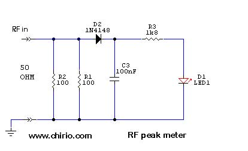
Interference from household lighting ..... how to eliminate it!
Most low-consumption lamps, used at home, produce noise in the low HF band, particularly below 2-3 MHz, generating beats at free frequency that shift with the lamp's own heating and with the aging of the fluorescent tube. All those who want to listen to radio during evening hours know well that the first operation is to turn off all light sources and also switching supplies related to old computers.
As for power supplies it is better to turn them off, but light is needed and so as not to go to candlelight, I recommend installing LED filament lamps made with minimal electronics, resulting in radio interference equal to zero, like having the old filament lamps with the advantage of consuming much less!
Filament LED lamps can be found at major supermarkets or electrical supply shops, available for some time now in various wattages and fittings, and just coming out too are the white (cold) light ones at 6500°K as in the photo and better still those at natural white 4000°K.
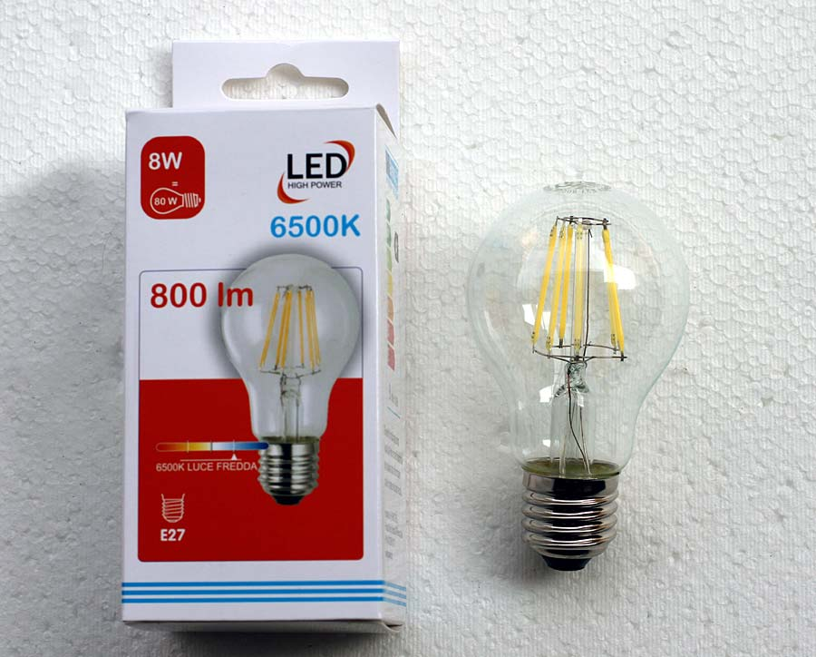
Filament LED Lamps description operation Wikipedia
Gain control signal output MiniWhip:
By varying the supply voltage we vary the gain of the MiniWhip circuit.
The nominal working voltage for MiniWhip PCB, SR and SDR is 9V while for the XP it can go to 12V.
If we reduce the voltage we can reduce the output signal, therefore the MiniWhip antennas still work with 6V voltage and can go down to 1.2V with almost zero output signal.
Some simple solutions to vary the MiniWhip power supply:
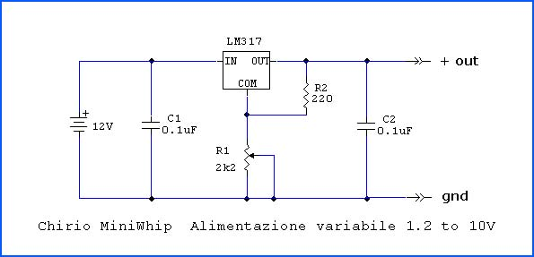
{kind=link}
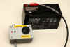
Circuit diagram for variable regulated power supply, better suited for stationary MiniWhip XP II, all must be placed in a metal box to avoid interference.
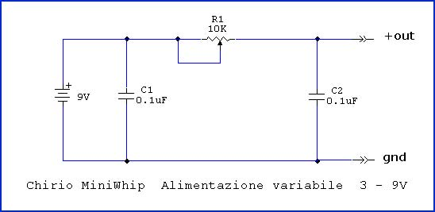
{kind=link}
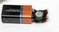
Electrical circuit voltage regulator, more suitable for MiniWhip PCB, SR and SDR.
Control signal attenuation MiniWhip input:
In a very simple way it's possible to attenuate the incoming signal in the Miniwhip, just partially shield the active part of the antenna. This is possible on all versions of MiniWhip using simple aluminum foil from the kitchen.
Gradually cover the MiniWhip tube/antenna with foil connected to ground and verify the relative signal level.
By completely covering the antenna, an attenuation of more than 90% of the signal is obtained.
The lower part of the aluminum must make good contact with the BNC and the metal part of the radio.
Or wrap bare copper wire over the aluminum and connect it to the BNC or the shielded braid of the RG58 cable.
The attenuation values must be verified experimentally for the various frequencies involved by tuning known stations with strong signal.
{kind=link}
MiniWhip and Grundig Satellit 600:
Vittorio writes me from Florence: I have a Grunding 600 Satellit, how can I connect a MiniWhip and which is the most suitable?
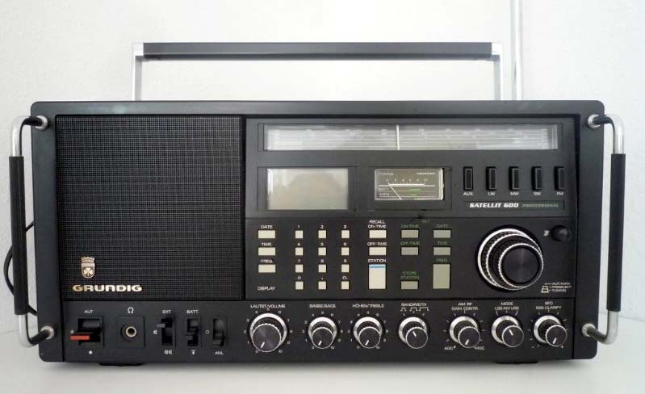
The Grundig Satellit 600 doesn't have a BNC antenna input, but uses a TV-type coaxial input, and for HF there are antenna and ground terminals (the old way); just make a bracket so that from a panel-mount BNC-F, short wires come out to insert into the receiver terminals.
From the circuit it seems that the FM/TV connector can also carry HF signals, depending on internal switching, in this case just get a BNC-TV adapter.
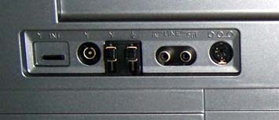
The most suitable antenna is the MiniWhip SDR which being compact and portable can be easily positioned on the balcony or outside the window.
Grundig Satellit 600 manual: http://swl.net.ru/wp-content/uploads/2014/08/grundig_satellit_600_pro_service_manual.pdf
Tips for mounting the MiniWhip:
- Position the antenna high, minimum 4 meters away from cables and electrical sources, for feedline RG58/U cable is fine, even for lengths of 15-30meters. Good results can also be obtained with 75 ohm TV cables or shielded audio cables.
- The higher you go, the more the antenna gains on the signal. Roughly a height of 10-12 meters gives an increase of +10dB compared to 2 meters.
- There are no significant differences in using an iron or plastic pole, since the coaxial cable descending has the same characteristics as a metal pole... important that it be small diameter with nylon guy wires.
- It is important to have a good ground connection, ideally dedicated only to this antenna and not making a common point with the house system. A 1 meter long iron pole driven into moist soil works fine, the connection to the antenna must be as short as possible, avoid loops and long cable runs.
- A better ground would be achieved with 4 steel/copper stakes driven into moist soil where rain gutters or garden tap water drain. Connect the 4 poles with 16mm copper cable and bring with a single cable to a common terminal block, ground everything including the roof metal structures, copper gutters and iron poles.
- Avoid as much as possible interference sources near the antenna, such as neon/LED lamps, electrical cables, brushed motors.

- As shown in the photo to hold the MiniWhip XP II in place on the 32 mm PVC tube, use transparent silicone, other more stubborn glues could block the bushing too much for any removals.
- The silicone also prevents water and rain from entering the PVC tube protecting the BNC connectors and power supply.
- It is always advisable to position the MiniWhip in vertical position even if operation is good also in horizontal position.

- In this last period of 2015 there are often poor propagation conditions, due to "Solar Spots" that could cancel the signals receivable from the MiniWhip, it is recommended to consult the site http://www.hamqsl.com/solar.html to verify propagation conditions for the various bands.

- The drawing illustrates how to best position the Mini Whip XP II with double descent.
- The PVC pole must be positioned away from obstacles such as walls, fences and tall trees.
- Use nylon tie cables like fishing line or braid.
- Run cables on the ground to avoid RF ingress
- By grounding the shielded power cable, generally the noise is reduced.
- To avoid burning the FET at the input, all MiniWhips must be kept at least 10 meters from a transmitting antenna.
On shortwave a directive and tuned antenna certainly has a more centered and clean signal, but you know the cost and size.....
We're talking about a small antenna that my son uses with the scanner to listen to foreign stations..... it allows you to listen during the day to 50-100 stations at full strength between 100kHz and 30 MHz, while in the evening/night there are over 500 stations from around the world...!!!
The only precaution is to get out of the house and away from any kind of structure and electrical cables, even trees with leaves absorb signal, you need an open place and high up.....and the cell phone off!
This MiniWhip antenna gives enthusiasts the ability to receive weak signals without mounting towers on the roof, or better to go on a mountain trip and listen to radio amateurs and broadcasters perhaps from New Zealand....all while putting to good use a shortwave radio left in the drawer that received very little with its whip antenna.....
Chinese stations are increasing transmission power on shortwave to bring news around the world to their compatriots, a good compact antenna completes the job...

MiniWhip SR 2016 notes from the manufacturer.
After 4 years from conception, continuous improvement and achievement of the current product, it can be said that this antenna has proven to be an excellent product; it has been shipped to regions all over the world, used by technicians and radio amateurs in Oceania, America and Canada as well as South America and Siberia; one antenna even ended up on a ship heading to the South Pole bases and in all European countries.
The MiniWhip SR has proven to be always up to the task of giving satisfactory receptions on all HF Bands, when propagation conditions are present.
Of exceptional robustness with no complaints of mechanical breakage or electrical issues. Operation is still guaranteed with battery discharged down to 3V and at low external temperatures. The actual operating runtime is over 200 hours with a Duracell 9V battery.
Use in the mountains represents the best solution for this antenna, far from sources of interference and coupled with portable scanner receivers, it allows for reception almost impossible with wire antennas positioned in populated centers.
Difficult to improve has been copied by some but the unique and original is this one sold on www.chirio.com.
Turin June 2016 by R.Chirio
MiniWhip SR 2016 notes from the manufacturer.
After 4 years from ideation, continuous improvement and the achievement of current product, it can be said that this antenna has proved to be a great product, has sent to all part of the world, used by technicians and radio amateurs in Oceania, America and Canada as well as in South America and Siberia. An antenna is also finished on the ship towards some bases of South Pole and a bit 'in all European countries.
The MiniWhip SR has been shown to be always up to give satisfactory receptions on all HF bands, when present the propagation conditions.
Highly robust did not complain mechanical failures as well as electrical problems. The operation is guaranteed even with discharged battery up to 3V and with low outdoor temperatures. The real authonomy of operation is over 200 hours with a 9V Duracell battery.
The use in the mountains is the best solution for this antenna, far away from interference sources and couple with portable scanners receivers, allows receptions almost impossible with wire antennas positioned in residential areas.
Difficult to improve has been copied by some but the unique and original, this is sold o www.chirio.com .
Turin June 2016 by R.Chirio
Listening tips: stations, bands, frequencies, times and seasons.
- Italian Association for Radio Reception http://www.air-radio.it/
- International Shortwave Broadcast Bands http://www.hamuniverse.com/shortwavebandfreqs.html
- RADIO NEW ZEALAND INTERNATIONAL http://www.rnzi.com/pages/listen.php
- Manuals and diagrams for radio amateurs, CB and BCL http://www.radiomanual.eu/
© Roberto Chirio: all rights reserved.